KBS 熊本フィールド 2023 交通量分析
地域課題解決に向けた取り組みの一環として、熊本県警が車両感知器などの計測機器で収集した一般道路の断面交通量のオープンデータを用いて以下の分析を行いました。
平日の交通量の分析マップ
2022年の全ての平日の平均交通量の一日24時間の推移のグラフを、地図上の計測地点にプロットしました。
リンクをクリックして表示してください。
- 合志市とその周辺の交通量分析
- 合志市の交通量分析
- 上天草市の交通量分析
- 大津・阿蘇方面の交通量分析
- 熊本市の交通量分析 (Big!)
- 交通量とは、各計測地点での一時間当たりの通過車両数です。
- 熊本市のデータは、8MBと大きいので、LAN接続環境での閲覧がおすすめ。
- 合志市とその周辺とは、合志市全域、就業・就学に関連する熊本市北部、就業や物流に関連するセミコンテクノパーク周辺地域、熊本空港の北側地域などで、以下の緯度、経度で囲まれる地域としました。
- 32.836216 < 緯度 < 32.923801
- 130.698463 < 経度 < 130.875034
休日の交通量の分析マップ
2022年の全ての休日の平均交通量の一日24時間の推移のグラフを、地図上の計測地点にプロットしました。
リンクをクリックして表示してください。
平日の交通量のヒートマップ
その他の熊本県全域マップ
過去4年間の交通量の推移
2019年1月から2023年3月までの交通量の推移をグラフにしました。
- 合志市とその周辺の交通量の推移
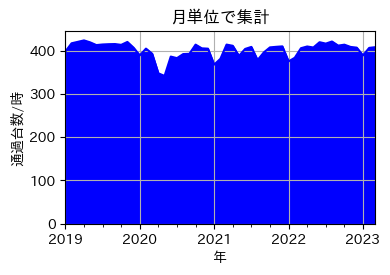
- 合志市の交通量の推移
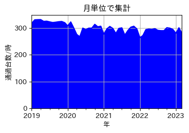
- 上天草市の交通量の推移
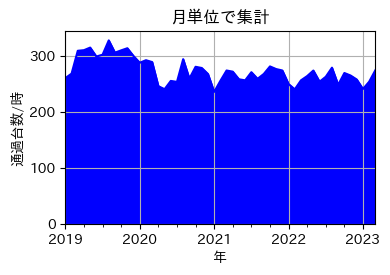
- 大津・阿蘇方面の交通量の推移
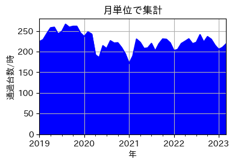
- 熊本市の交通量の推移
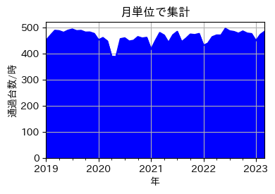
2022年の曜日別交通量
2022年の交通量を曜日別に集計しました。
- 合志市とその周辺の曜日別交通量
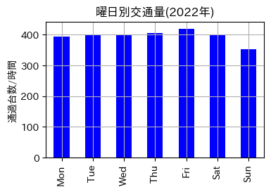
- 合志市の曜日別交通量
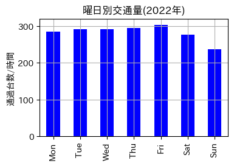
- 上天草市の曜日別交通量
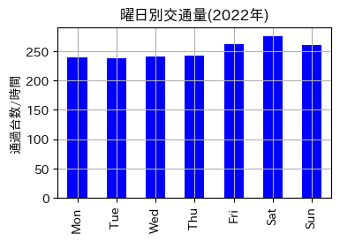
- 大津・阿蘇方面の曜日別交通量
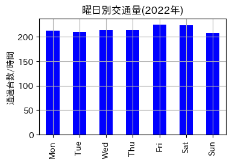
- 熊本市の曜日別交通量
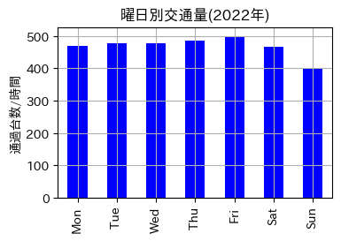
2022年の平日・休日交通量比較
2022年の交通量の平日(青)と休日(赤)での比較です。
- 合志市とその周辺の曜日別交通量
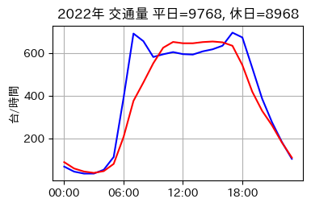
- 合志市の曜日別交通量
- 上天草市の曜日別交通量
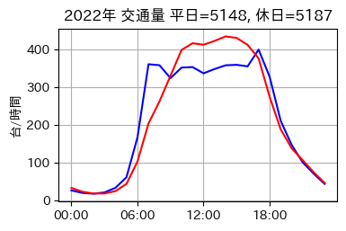
- 大津・阿蘇方面の曜日別交通量
- 熊本市の曜日別交通量
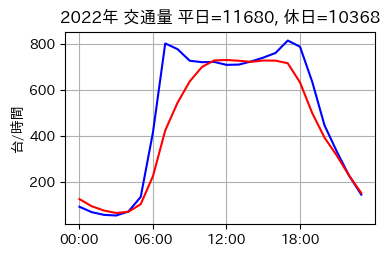
補足説明
- 各計測地点では、「断面交通量情報」として5分当たりの通過車両数が提供されています。
- 各計測地点での車速や車種の情報は提供されていません。
- 高速道路の「断面交通量情報」は未提供で、一般道のデータを分析しています。
- 熊本県全域 交通量計測地点一覧 を地図上にプロットしました。
- 😢人吉市には計測地点がありません😭
情報源
次の情報源を使ってデータ処理を行いました。